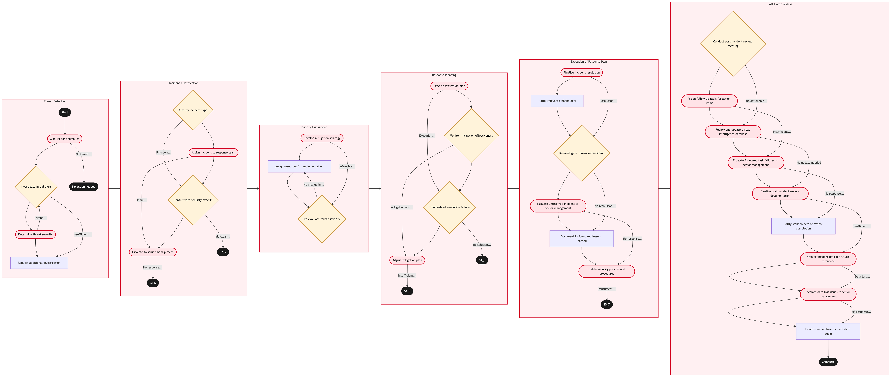

Updated 2026-08-21
Security Monitoring and Threat Detection
Process flow
Click to zoom

Process steps
▼
Phase 1 — Threat Detection
4 steps
| Step | Activity | Role | System | Input | Output | KPI | Dec | Exc | Pain point |
|---|---|---|---|---|---|---|---|---|---|
| 1.1 | Monitor for anomalies | Security Analyst | SIEM and SOCU | Real-time system logs and network traffic data | Alerts of potential security threats | Detection accuracy rate (95%) | N | Y | False positives can overwhelm analysts, leading to missed genuine threats. |
| 1.2 | Investigate initial alert | Security Analyst | SIEM and SOCU | Alert details from the SIEM system | Threat intelligence report | Investigation time (30 minutes) | Y | N | Limited investigative tools can slow down threat detection. |
| 1.3 | Determine threat severity | Security Analyst | ITSM PlatformC | Threat intelligence report | Severity classification (low, medium, high) | Classification accuracy rate (90%) | N | Y | Misclassification can lead to inappropriate resource allocation. |
| 1.4 | Request additional investigation | Security Analyst | ITSM PlatformC | Threat intelligence report | Investigation request ticket | Response time to request (15 minutes) | N | N | Delayed investigations can allow threats to escalate. |
▼
Phase 2 — Incident Classification
4 steps
| Step | Activity | Role | System | Input | Output | KPI | Dec | Exc | Pain point |
|---|---|---|---|---|---|---|---|---|---|
| 2.1 | Classify incident type | Security Analyst | ITSM PlatformC | Investigation request ticket | Incident classification (e.g., DDoS, malware) | Classification accuracy rate (95%) | Y | N | Complex incidents require detailed analysis. |
| 2.2 | Assign incident to response team | Security Analyst | ITSM PlatformC | Incident classification and severity | Assigned ticket with response team details | Assignment time (10 minutes) | N | Y | Inadequate team allocation can lead to resource overcommitment. |
| 2.3 | Consult with security experts | Security Analyst | Integration PlatformU | Incident details and investigation findings | Expert opinion and potential threat mitigation strategies | Consultation time (20 minutes) | Y | N | Lack of expertise can delay effective response. |
| 2.4 | Escalate to senior management | Security Analyst | ITSM PlatformC | Incident details and investigation findings | Escalated ticket with senior manager's attention | Escalation time (5 minutes) | N | Y | Senior management may not have the necessary context for immediate action. |
▼
Phase 3 — Priority Assessment
3 steps
| Step | Activity | Role | System | Input | Output | KPI | Dec | Exc | Pain point |
|---|---|---|---|---|---|---|---|---|---|
| 3.1 | Develop mitigation strategy | Security Analyst | Integration PlatformU | Expert opinion and potential threat mitigation strategies | Mitigation plan | Plan development time (30 minutes) | N | Y | Complex threats may require multiple layers of defense. |
| 3.2 | Assign resources for implementation | Security Analyst | ITSM PlatformC | Mitigation plan | Resource allocation and assignment ticket | Resource allocation time (10 minutes) | N | N | Insufficient resources can hinder effective mitigation. |
| 3.3 | Re-evaluate threat severity | Security Analyst | ITSM PlatformC | Incident details and current situation | Updated severity classification (low, medium, high) | Classification accuracy rate (90%) | Y | N | Threats may escalate while mitigation is being planned. |
▼
Phase 4 — Response Planning
4 steps
| Step | Activity | Role | System | Input | Output | KPI | Dec | Exc | Pain point |
|---|---|---|---|---|---|---|---|---|---|
| 4.1 | Execute mitigation plan | Security Analyst | Integration PlatformU | Mitigation plan and assigned resources | Execution status report | Execution time (3 hours) | N | Y | Technical issues during execution can delay response. |
| 4.2 | Monitor mitigation effectiveness | Security Analyst | SIEM and SOCU | Execution status report | Effectiveness evaluation report | Effectiveness accuracy rate (95%) | Y | N | Inaccurate monitoring can lead to false reassurance. |
| 4.3 | Troubleshoot execution failure | Security Analyst | Integration PlatformU | Execution status report and error logs | Troubleshooting report | Troubleshooting time (1 hour) | Y | N | Complex failures can be difficult to diagnose. |
| 4.4 | Adjust mitigation plan | Security Analyst | Integration PlatformU | Effectiveness evaluation report and troubleshooting results | Adjusted mitigation plan | Plan adjustment time (30 minutes) | N | Y | Resource constraints may limit adjustments. |
▼
Phase 5 — Execution of Response Plan
6 steps
| Step | Activity | Role | System | Input | Output | KPI | Dec | Exc | Pain point |
|---|---|---|---|---|---|---|---|---|---|
| 5.1 | Finalize incident resolution | Security Analyst | ITSM PlatformC | Execution status report and effectiveness evaluation report | Incident closure ticket | Closure time (10 minutes) | N | Y | Incomplete resolution can lead to lingering threats. |
| 5.2 | Notify relevant stakeholders | Security Analyst | Integration PlatformU | Incident closure ticket and resolution details | Notification sent to stakeholders | Notification time (5 minutes) | N | N | Delayed notifications can lead to confusion. |
| 5.3 | Reinvestigate unresolved incident | Security Analyst | Integration PlatformU | Incident closure ticket and resolution details | Reinvestigation report | Reinvestigation time (2 hours) | Y | N | Unresolved incidents may require multiple attempts. |
| 5.4 | Escalate unresolved incident to senior management | Security Analyst | ITSM PlatformC | Reinvestigation report | Escalated ticket with senior manager's attention | Escalation time (5 minutes) | N | Y | Senior management may not have the necessary context for immediate action. |
| 5.5 | Document incident and lessons learned | Security Analyst | ITSM PlatformC | Reinvestigation report | Incident documentation and lessons learned report | Documentation time (30 minutes) | N | N | Poor documentation can lead to repeated incidents. |
| 5.6 | Update security policies and procedures | Security Analyst | ITSM PlatformC | Incident documentation and lessons learned report | Updated security policy document | Policy update time (1 week) | N | Y | Resource constraints may limit policy updates. |
▼
Phase 6 — Post-Event Review
9 steps
| Step | Activity | Role | System | Input | Output | KPI | Dec | Exc | Pain point |
|---|---|---|---|---|---|---|---|---|---|
| 6.1 | Conduct post-incident review meeting | Security Analyst | Integration PlatformU | Incident documentation and lessons learned report | Review minutes and action items | Meeting time (1 hour) | Y | N | Inadequate communication during the meeting can lead to missed insights. |
| 6.2 | Assign follow-up tasks for action items | Security Analyst | ITSM PlatformC | Review minutes and action items | Follow-up task assignments | Task assignment time (30 minutes) | N | Y | Resource constraints may limit follow-up tasks. |
| 6.3 | Review and update threat intelligence database | Security Analyst | Databricks LakehouseB | Incident documentation and lessons learned report | Updated threat intelligence database | Database update time (1 day) | N | Y | Inaccurate threat data can lead to ineffective monitoring. |
| 6.4 | Escalate follow-up task failures to senior management | Security Analyst | ITSM PlatformC | Follow-up task assignments and failure details | Escalated ticket with senior manager's attention | Escalation time (5 minutes) | N | Y | Senior management may not have the necessary context for immediate action. |
| 6.5 | Finalize post-incident review documentation | Security Analyst | ITSM PlatformC | Review minutes and action items | Post-incident review documentation | Documentation time (30 minutes) | N | Y | Poor documentation can lead to missed insights. |
| 6.6 | Notify stakeholders of review completion | Security Analyst | Integration PlatformU | Post-incident review documentation | Notification sent to stakeholders | Notification time (5 minutes) | N | N | Delayed notifications can lead to confusion. |
| 6.7 | Archive incident data for future reference | Security Analyst | Databricks LakehouseB | Incident documentation and lessons learned report | Archived incident data | Data archiving time (1 day) | N | Y | Inadequate storage can lead to data loss. |
| 6.8 | Escalate data loss issues to senior management | Security Analyst | ITSM PlatformC | Data archiving failure details | Escalated ticket with senior manager's attention | Escalation time (5 minutes) | N | Y | Senior management may not have the necessary context for immediate action. |
| 6.9 | Finalize and archive incident data again | Security Analyst | Databricks LakehouseB | Incident documentation and lessons learned report | Archived incident data | Data archiving time (1 day) | N | N | Inadequate storage can lead to data loss. |
Swim lanes
Security Analyst1.1 1.2 1.3 1.4 2.1 2.2 2.3 2.4 3.1 3.2 3.3 4.1 4.2 4.3 4.4 5.1 5.2 5.3 5.4 5.5 5.6 6.1 6.2 6.3 6.4 6.5 6.6 6.7 6.8 6.9
Systems touched
SIEM and SOCUITSM PlatformCIntegration PlatformUDatabricks LakehouseB
Key performance indicators
- Detection accuracy rate (95%)
- Investigation time (30 minutes)
- Classification accuracy rate (90%)
- Execution time (3 hours)
- Effectiveness accuracy rate (95%)
Risks and control points
- False positives overwhelming analysts and leading to missed genuine threats.
- Limited investigative tools slowing down threat detection.
- Misclassification of threats leading to inappropriate resource allocation.
- Complex incidents requiring detailed analysis.
- Resource overcommitment due to inadequate team allocation.
Air Canada Process Wiki — process and systems reference compiled from public sources
for IT Application Management and User Support pre-sales discovery.
Built 2026-08-21. Every system carries an evidence tier: tier C is an industry pattern and tier U is an open
question, and neither should be asserted as fact about Air Canada without confirmation in discovery.
Not affiliated with or endorsed by Air Canada. Air Canada, Aeroplan and Altitude are trademarks of Air Canada.